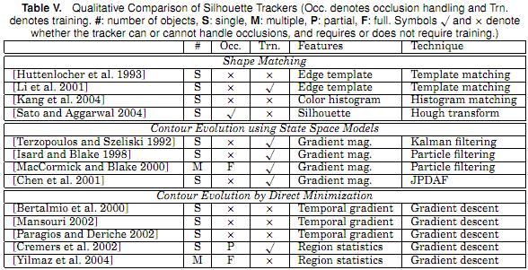
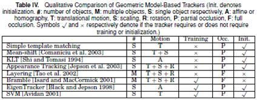

形状复杂的目标难以用简单的几何形状来表示。基于轮廓的方法提供了较为准确的形状描述。这类方法的主要思想是用先前帧建立的目标模型找到当前帧的目标区域。其中目标模型可以是颜色直方图、目标边缘或者轮廓。
基于轮廓的跟踪方法可以分为两类:
这种方法类似于基于模板的跟踪，在当前帧中搜索目标的轮廓和相关模型。
用基于边缘的表达方式进行形状匹配，用Hausdorff距离进行匹配测量。
也提出了用Hausdorff距离的形状匹配方法。
另一种匹配形状的方法是在连续两帧中寻找关联轮廓，建立轮廓关联，或称为轮廓匹配，是类似于点匹配的一种方法。这种方法使用了目标的外观特征。
目标模型可以使密度函数(颜色或边缘直方图)、轮廓边界、目标边缘或这些信息的组合
Kang et al.[2004]
使用了颜色和边缘直方图作为目标模型
使用了轮廓内部得到的边缘信息建模目标外观
用光流法提取进行轮廓匹配也是一种思路。如Sato and Aggarwal [2004] - 用Hough变换计算轮廓轨迹
这种方法从前一帧的轮廓位置开始轮廓推演，得到当前帧的轮廓。前提是当前帧和前一帧的目标轮廓有所交叠。这类方法又有两种不同的实现方式，用状态空间模型建模轮廓的形状和运动，或直接用梯度搜索等轮廓能量最小化方法推演轮廓。
目标状态由轮廓的形状和运动参数定义。状态在轮廓的后验概率最大化时更新。
用控制点的运动定义目标状态，控制点的动态性用弹簧模型建模。轮廓新状态用卡尔曼滤波器预测。
用样条形状参数和仿射运动参数定义目标状态，状态更新用粒子滤波器实现。
将Isard and Blake[1998] 的基于粒子滤波的方法扩展到多目标跟踪，用排他性原则处理遮挡。能够处理两个目标之间的遮挡。
用参数化的椭圆集合表示轮廓。每个轮廓节点拥有一个HMM，每个HMM的状态由轮廓控制点的法线方向上的点定义。HMM的状态转移概率用JPDAF估计。轮廓状态用Viterbi algorithm [1967]估计。
以上的基于状态空间模型跟踪的方法都是采用显式的方法表达轮廓，如参数样条曲线。这种表达不能处理拓扑结构的变化，比如目标区域的分割、合并等。而轮廓拖延的方法则能够解决拓扑变化带来的问题。
用轮廓推演的跟踪与目标分割的方法有些类似。分割和跟踪都是通过贪婪算法或梯度下降来最小化能量。
用光流不变约束在连续帧中推演轮廓，用level set表达式迭代计算轮廓位移。用了两个能量函数，一个用作轮廓跟踪，一个用作强度的变化。
也用光流不变约束进行轮廓推演。该算法不止计算边缘的光流，也计算目标区域内部每个像素的光流向量。再迭代使得能量最小化。
也是用光流做轮廓推演
还可以通过提取连续帧之间的目标内外的一致性信息进行轮廓推演。这种方法需要在当前帧中用先前的位置进行轮廓初始化。
定义了一个基于Ward距离的静态图像模型控制轮廓推演的能量函数
用目标边界周围的颜色和纹理模型推演目标轮廓
用基于level set 的形状模型建模了目标性状和其变化，该方法能够解决轮廓跟踪中的遮挡问题
轮廓跟踪通常是在需要跟踪目标整体区域时执行的。轮廓跟踪的最重要的优点在于其处理目标形状变化的适应性。
轮廓可以用不同方式来表达，最常用的表达方式是二元的指示函数，目标区域标记为1，非目标区域标记为0.对基于轮廓的方法，轮廓可以是显式表达(控制点集合组成的轮廓边界)，或隐式表达(在网格上定义的函数)。最常用的隐式轮廓表达式level set表达。
轮廓跟踪算法的目标表达方式可以使运动模型、外观模型、形状模型或这些模型的组合。目标模型通常由参数的或非参数的密度函数建模，目标性状可以用轮廓子空间的形式建模。
基于外观的形状表达在直观的轮廓搜索中普遍应用。对基于边缘的形状表达，Hausdroff距离是最广泛应用的测量方法。
遮挡处理也是一个重要问题。通常没有显式地做出解决，常规方法是用匀速或匀加速假设来计算目标位置。也有少数方法对遮挡用强制形状约束来显式处理。
另一个重要问题是目标分割和融合等拓扑变化的处理。这通常可以由隐式的轮廓表达来解决。
区分不同的轮廓跟踪算法的重要因素是:

跟踪问题可以用帧与帧之间检测到的目标点之间的关系来表达。点之间的关联问题的复杂性特别表现在遮挡、误检测、目标进出画面等情况。
总的来说，点关联的方法可分为两大类：确定性方法和统计性方法。前者通常用定性的运动限制方法，后者用目标检测和不确定性的建模来建立关联。
确定性的方法定义了在一系列约束条件下，关联t时刻和t-1时刻图像帧中每个目标的成本。关联成本的最小化规划为一个优化组合问题。可以用最优分配方法求解，如匈牙利算法，贪婪搜索算法。关联成本的限制条件可以使以下条件的组合定义，这些条件同时适用于确定性和统计性的方法：
假设目标位置在两帧之间没有明显变化
定义了目标速度的上限，即限制了目标周围可能的圆形关联邻域
家丁目标的运动方向和速度没有明显变化
假定在一个较小邻域内的目标们的速度相似
假设目标在3D世界中是刚性的，即真实目标上的两个点之间的距离保持不变
是Proximity 和Common motion的组合约束
这些方法中较新较完善的是Veenman et al. [2001]和Shafique and Shah [2003]的算法。
统计性方法在目标状态估计中考虑了观测噪声和模型不确定性，用状态空间方法建模速度、位置、加速度等目标属性。
目标信息通常由一系列的状态表达：Xt：t = 1, 2, … . 状态随时间的变化由动态方程控制：Xt = ft(Xt-1) + Wt. 其中Wt是白噪声. 观测域状态之间的关系由观测方程控制：Zt = ht(Xt, Nt).其中Nt是独立于Wt的白噪声.
跟踪的任务就是给定到t时刻为止的所有观测，估计得到状态Xt，即创建概率密度函数p(Xt|Z1,...,t).
理论上的最优解可由递归的贝叶斯滤波器分两步求解，预测-修正。
对于单个目标的情况，状态可用上述两步简单估计得到；对于多目标的情况，则需要将观测域相应目标对应起来。
1 单目标状态估计
如果状态转移矩阵和观测矩阵都是线性的，状态和噪声是高斯分布的，则最优的状态估计方法是卡尔曼滤波。
如果状态转移矩阵和观测矩阵不是线性的，则可以用扩展卡尔曼滤波，先对其泰勒展开进行线性化，再用卡尔曼滤波。
目标状态不是高斯分布的情况下，可以用粒子滤波方法。
2 多目标状态估计
广泛采用的两种方法是Joint Probability Data Association Filtering (JPDAF)和Multiple Hypothesis Tracking (MHT)
进阶阅读：
核跟踪的目标表达通常用原始的目标区域来表达，跟踪由计算目标运动来实现的。目标运动以参数形式的运动(如平移、仿射等)或计算得到的连续帧的密度流区域描述。这些算法在外观表达的运动、跟踪的目标数目、运动估计使用的方法等方面有所差异。核跟踪算法可分为两类：分别是基于模板和概率密度的外观模型的跟踪，和基于多视角外观模型跟踪。
这类方法计算简单，方法直观。根据目标是独立跟踪还是联合跟踪又可分为两个子类。
这类算法中最常用的是模板匹配，也是最直观的方法。在图像中搜索类似于预定义模板的区域，通过相似性度量(比如cross correlation)判断目标位置。主要问题在于计算量大。可以用邻域范围限定等方法来减少搜索半径。
除了模板匹配外，还可以用颜色直方图、混合模型等来表达外观模型。
高效的模板匹配
用MeanShift算法搜索
提出一种组合跟踪算法，分三种成分处理 - 稳定外观、暂态特征、噪声。用在线的EM算法学习三个分量参数。
光流法也是一种基于概率密度外观模型跟踪的方法。通过计算每个像素在光照不变约束下的光流向量产生稠密光流区域，从而得到矩形区域的平移。KLT算法Shi and Tomasi[1994]就是用应用光流特征的一种跟踪算法。
这类算法通常对整个图像进行建模，包括背景和每个目标。
分层建模整体图像。每层由一个先验形状(椭圆)、运动模型(平移和旋转)和外观(高斯函数建模的图像强度)组成。
提出联合建模背景和前景的跟踪方法。背景的外观由混合高斯模型建模，目标的形状建模为圆柱体。跟踪用粒子滤波实现。该算法可以处理目标之间的遮挡，但是场景中目标数目的最大值要预先定义，需要对前景区域进行建模。
对多个视角的目标进行离线学习，使能够处理重大视角变化情况跟踪问题。
提出基于子空间的方法。先用PCA建立目标外观的子空间表达，然后将图像转化到特征子空间中。
使用了SVM分类器对多视角进行分类，并跟踪。
核跟踪算法的定性比较，可以由以下标准获得：

跟踪算法的定性比较
由于实时性的需要，当前阶段的核跟踪方法往往用基本几何形状来表达目标。这种表达方式的问题在于部分目标可能落在定义的形状之外而背景则可能部分进入了目标区域。这时用模型相似度来度量很可能会出错。解决这一问题的一种方法是将区域限定在目标内部，另一种方法是用颜色、纹理的概率密度函数建模目标外观并基于条件概率给基本形状内部的像素分配权值。
进阶阅读：